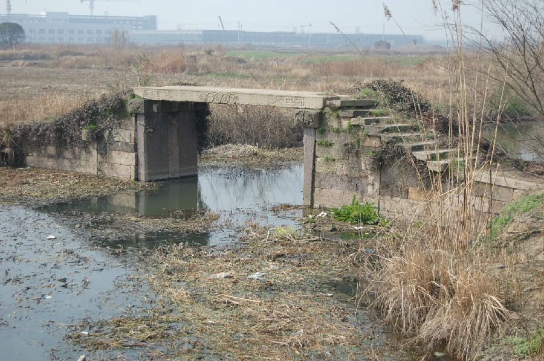
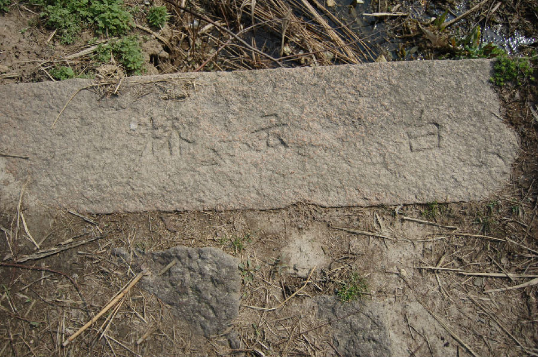

嘉兴市文物保护网 · 市级文物保护点 · 2020-11-03 · 原文


三建村白云桥位于嘉兴市秀洲区王店镇三建村23组。据村民介绍及对桥形制的判断，此桥为清末所建。南北向跨顺路桥港，系单孔无栏梁式石板桥，桥全长15.81米，桥面宽1.58米由3块石板平铺而成，南北两侧各有石阶8级，桥额刻有“重建白云桥”，旁刻回字纹，每级石阶上皆刻“白云桥”，桥楹联因条件限制无法记录。白云桥形制较完整，造型简洁、大方，雕饰精美，具有一定的历史和艺术价值。2010年公布为嘉兴市文物保护点。